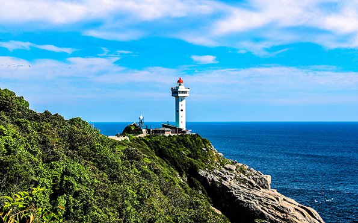
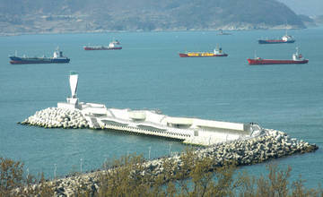

1차 참여 섬
섬 투어 미식 패스포트의 핵심 참여 섬들로, 다양한 체험 프로그램과 특산물을 제공합니다.

돌산도
1차 참여
여수시 돌산읍
여객선 소요시간: 차도선 이용 (여수에서 약 20분)
여수에서 가장 접근성이 좋은 섬으로, 돌산대교를 통해 쉽게 방문할 수 있습니다. 유명한 돌산갓김치의 본고장으로, 직접 갓김치를 만들어보는 체험이 인기가 많습니다.
대표 체험 프로그램
- 돌산갓김치 만들기 체험
- 갓 수확 체험 (10월~12월)
- 마늘·방풍 등 특산물 요리 교실

거문도
1차 참여
여수시 삼산면
여객선 소요시간: 여수에서 약 2시간 30분
여수에서 남쪽으로 약 60km 떨어진 섬으로, 맑은 바다와 아름다운 자연 경관이 특징입니다. 이곳은 고품질 쑥이 자라는 곳으로 유명하며, 쑥을 활용한 다양한 체험 프로그램이 마련되어 있습니다.
대표 체험 프로그램
- 거문도 쑥 채취 체험 (4월~5월)
- 쑥차, 쑥떡 만들기 체험
- 거문도 등대 탐방

금오도
1차 참여
여수시 남면
여객선 소요시간: 여수에서 약 1시간
한국의 100대 명산 중 하나인 금오산이 있는 섬으로, 비렁길이라는 아름다운 해안 산책로가 유명합니다. 트레킹 후에는 신선한 해산물로 만든 요리를 체험할 수 있습니다.
대표 체험 프로그램
- 비렁길 트레킹 (가이드 동행)
- 해산물 요리 체험
- 전통 어구 체험

백야도
1차 참여
여수시 화정면
여객선 소요시간: 여수에서 약 50분
백야도는 여수의 멸치 생산지로 유명합니다. 이곳에서는 전통적인 방식으로 멸치를 잡고 가공하는 과정을 직접 체험하고, 신선한 멸치를 활용한 요리를 만들어볼 수 있습니다.
대표 체험 프로그램
- 멸치 잡기 체험 (계절 한정)
- 멸치 요리 실습
- 멸치 가공 공장 견학